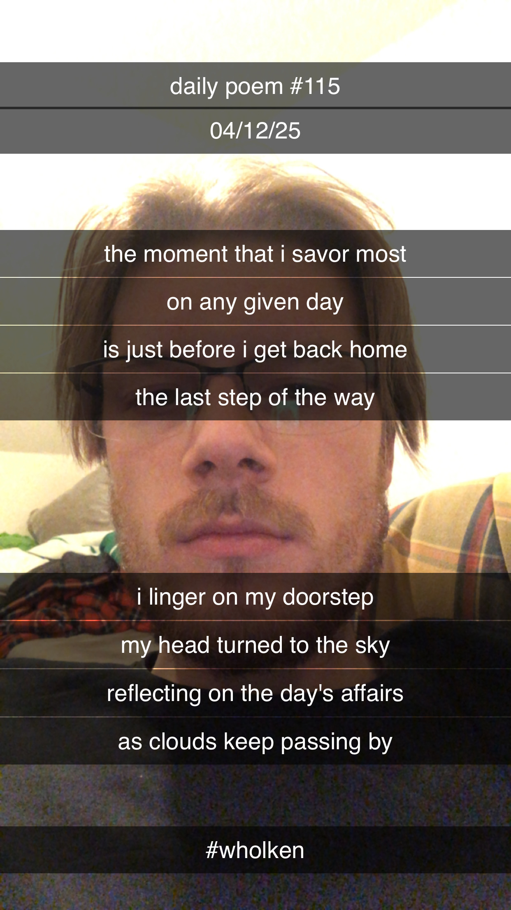

The Moment That I Savor Most
[115]The moment that I savor most
On any given day
Is just before I get back home
The last step of the way –
I linger on my doorstep,
My head turned to the sky,
Reflecting on the day's affairs
As clouds keep passing by.
